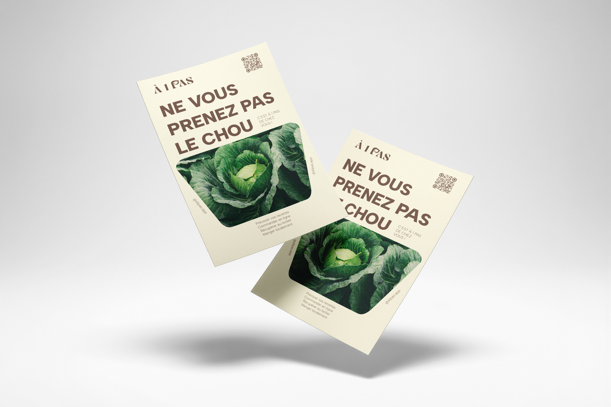
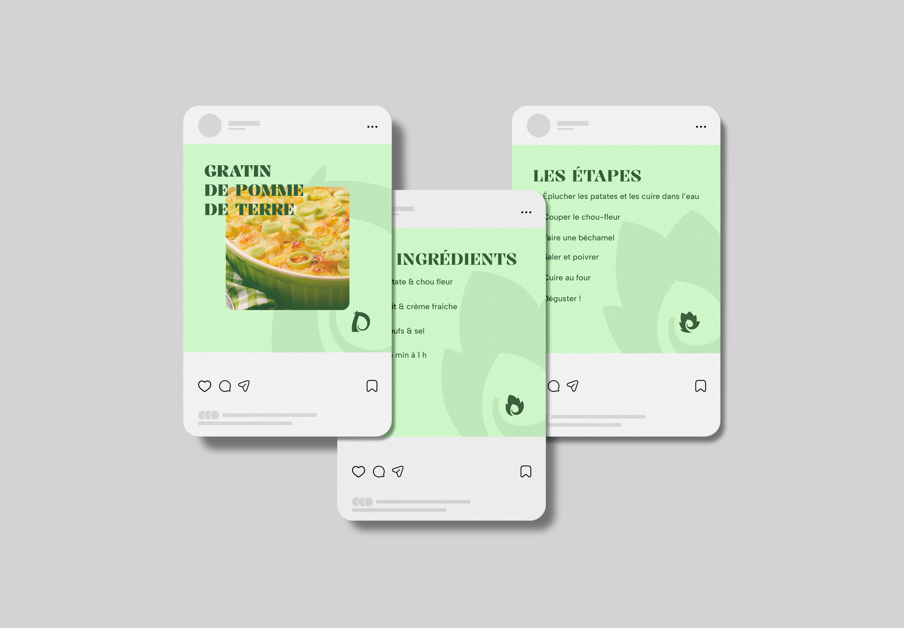

"À 1 Pas" est un projet étudiant qui vise à faciliter l’accès aux produits locaux grâce à une application mobile et web
mettant en relation consommateurs et producteurs de proximité.
La plateforme permet de découvrir des produits locaux,
de les commander et de profiter de recettes personnalisées pour mieux les intégrer au quotidien.
Elle offre également aux producteurs une vitrine numérique pour valoriser leur savoir-faire et commercialiser leurs produits.
Le projet a pour ambition de promouvoir les circuits courts,
de soutenir l’économie locale et d’encourager une consommation plus responsable.
À terme, un suivi de l’impact écologique des achats viendra sensibiliser les utilisateurs aux bénéfices de leurs choix.


Pour le projet "À 1 Pas",
je suis intervenu en tant que designer pour concevoir le logo et définir l’ensemble de la charte graphique.
Le logo s’appuie sur la typographie "Kalnia", qui se distingue par ses empattements élégants et ses contrastes marqués.
La lettre « P » intègre un bourgeon, évoquant le début d’une alimentation plus saine et responsable.
L’identité visuelle repose sur deux palettes de couleurs, associant le vert et le marron pour rappeler la nature et
les cultures agricoles. L’ensemble privilégie des formes épurées et une esthétique soignée,
afin de transmettre une image de marque à la fois naturelle, moderne et qualitative.



